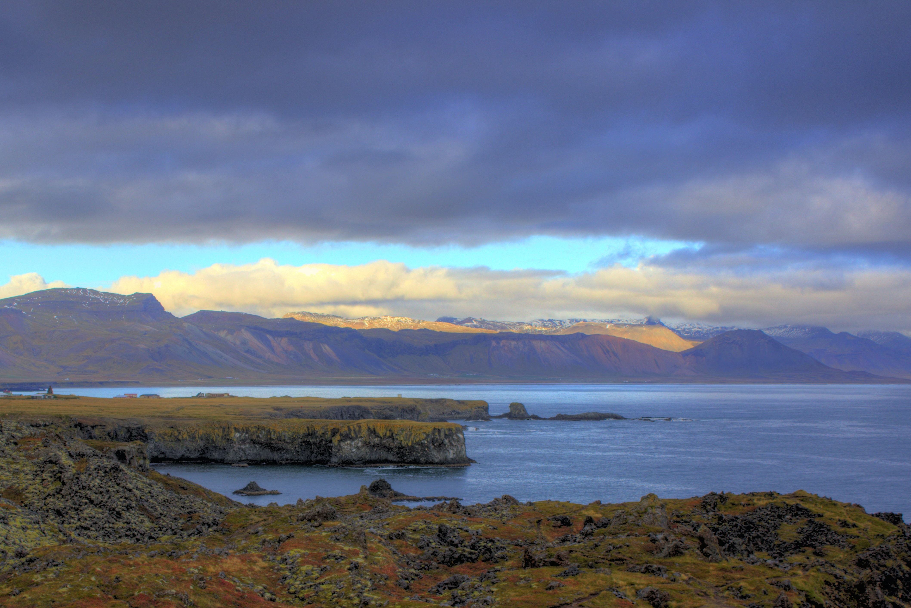
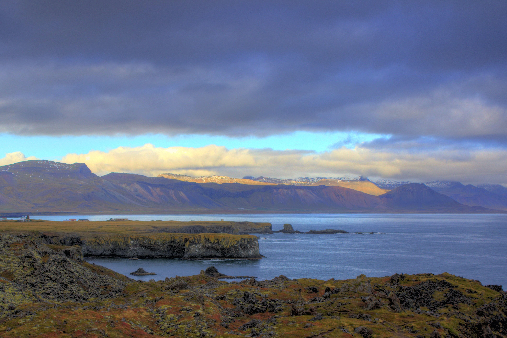

Maji safi kwa wote.
ROVAKU WATER PURIFICATION COMPANYMaji safi kwa wote.
ROVAKU WATER PURIFICATION COMPANY 



We treat tap water by softening it to remove impurities
It is done through iron/manganese removal where iron is removed from water by use of chemicals
It is mostly treated by filtration. Filtering sand and activated carbon among many other impurities
It is done through reverse osmoasis. Reverse osmosis removes contaminants from unfiltered water, or feed water, when pressure forces it through a semipermeable membrane. Water flows from the more concentrated side (more contaminants) of the RO membrane to the less concentrated side (fewer contaminants) to provide clean drinking water. The fresh water produced is called the permeate. The concentrated water left over is called the waste or brine.
Rainwater harvesting is the storing of rainwater during the monsoon season for the purpose of using it during periods of water scarcity. Generally speaking, it is a process used for col and storing rainwater for human use. Rainwater harvesting is best described as the technique by which rain water is accumulated and stored with the intention of reusing it during the dry season or when there is a drought. With rapid climatic changes, increase in global temperature and population growth, there is a scarcity of potable water in many countries across the world.The gradual falling of water levels, are a cause of serious concern not only because it leads to shortage of usable water but also because in coastal areas it causes imbalance in salinity of the area. Rapid industrialization and disposing chemical waste into water-bodies leads to pollution of rivers, lake and water-bodies. This is a global problem and needs a speedy solution. The supply of fresh water in this planet cannot be increased. So an alternative method must be sought for. One such method is harvesting rainwater. Rainwater harvesting is an easy and economical way to deal with this crisis. As men are becoming environment responsible, rain water harvesting is gaining popularity leading to eco-conservation and constructive use of natural resource. Falling water tables are widespread and most people in urban areas are dependent on bottled water which is neither cost-effective nor dependable. The possibility of pollution cannot be completely ruled out. The question of water security is at present a major issue in many parts of the world. One way to deal with this crisis is to adopt rainwater harvesting.
When you recycle the water that you use in your area, this means that you do not have to take water from other areas. Many areas where pure water is plentiful are delicate ecosystems that suffer when their water is removed. When the water is recycled, it makes it easy for places like the wetlands to keep their water supplies.
There are more advantages of recycling water and purifying it. This leads to enough water supply in our communities thus achieving our mission and vision as an organisation which is envisioned in helping communities